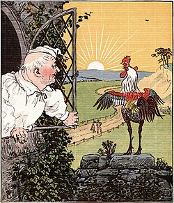

ShowContextMenu Test
This is a manual test to check the functionality of the ShowContextMenu add-on.
Preconditions
- NVDA is running on the system.
- The ShowContextMenu add-on is installed in NVDA.
Steps
- Open this HTML file in target browser.
- Go to the section titled "Test Rig".
- Set system focus to the "Test Link" link using the Tab key.
- Set the NVDA cursor to the "Test Image" image using the arrow keys or the G key.
- Make sure system focus remains on the link using NVDA+Tab command.
- Press the command of ShowContextMenu add-on (NVDA+Shift+F10 or NVDA+Application key).
- Examine the context menu items.
Expected Result
- The context menu for the image opens. It should contain items like "Copy image address" or something similar.
Test Rig
Test Link
The following image is in the public domain.
